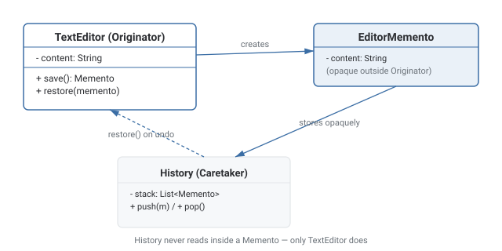

Memento Pattern
Lets an object capture and externally store a snapshot of its own state — for undo, checkpoints, or rollback — without exposing its internal representation to whoever holds the snapshot.
Theory
The problem, in plain terms
You're building a text editor with undo support. To undo, you need to be able to restore the document to some earlier state. The obvious approach is to let whatever code manages undo history reach directly into the TextEditor object and copy out its internal fields — but that breaks encapsulation, since external code now needs to know exactly what internal state the editor holds and how to reconstruct it. If the editor's internal representation changes later, the undo code breaks too.
Memento solves this by having the object itself (TextEditor, the Originator) create an opaque snapshot object (the Memento) that captures its own internal state, and hand that snapshot to external code without exposing what's inside it. The external code (a History/Caretaker) stores mementos and, to undo, hands a memento back to the originator, which restores its own state from it. The originator is the only thing that ever reads or writes the memento's actual internal contents — the caretaker just stores and passes it around as a black box.
How it's built
The Originator (TextEditor) has a method like save() that creates and returns a Memento containing a copy of its current state, and a restore(memento) method that sets its state back from a given memento. The Memento itself only exposes what the Originator needs to read it back — often the memento's fields are private to everything except the Originator. The Caretaker (History) just calls originator.save() to get mementos and stores them in a list/stack, calling originator.restore(memento) when undo is requested — it never inspects what's inside a memento.
Genuinely restrict memento field access to the Originator (via a friend class, a nested private class, or a narrow interface) rather than leaving fields readable "for convenience" — that's what keeps the encapsulation guarantee real.
Letting the Caretaker read or modify a memento's fields directly — it defeats the pattern's whole purpose and re-couples external code to the Originator's internal representation.
Where it bites you
Storing a full deep copy of large object state for every undo point can become memory-expensive if snapshots are taken frequently or the state is large — some implementations mitigate this by only storing diffs/deltas rather than full snapshots. Also, achieving true encapsulation (the Caretaker genuinely cannot read the memento's internals) requires some language-specific technique — many "textbook" implementations in practice just make the memento's fields readable, which weakens the encapsulation guarantee the pattern is meant to provide.
Diagram

When to Use
- You need undo/redo, checkpoints, or rollback for an object's state without exposing its internal representation.
- You want the object itself responsible for capturing/restoring its own state, keeping that logic in one place.
- The state is trivially small — copying a couple of public fields directly is clear enough, no snapshot machinery needed.
- Undo can be achieved more efficiently by replaying a log of reversible commands (see Command) instead of storing full state snapshots.
What interviewers are actually listening for: understanding that the core value of Memento is preserving encapsulation while still allowing external code to manage history — the Caretaker stores mementos opaquely and never reaches into their internals. Also, being able to discuss the memory cost trade-off of full-state snapshots versus command-log-based undo, showing awareness of real implementation trade-offs rather than reciting the pattern by rote.
Real-World Examples
- Text/image editor undo history — each edit creates a snapshot of document state that can be restored on undo.
- Database transaction savepoints — a savepoint captures the state to roll back to, without the calling code understanding the database's internal storage format.
- Game save states — a game's internal state is serialized into a save file (a memento) that can later restore the game to that exact point.
- Form wizards with a "back" button — each step's data is captured as a memento so navigating back restores the exact previous state.
- Version control snapshots — a commit captures a full snapshot of project state that can be restored without replaying every change from the beginning.
Interview Questions
Click a question to reveal the answer.
What are the three roles in Memento, and what does each do?
Originator is the object whose state needs to be saved/restored — it creates mementos of itself and can restore its own state from one. Memento is the opaque snapshot object holding captured state, exposed only to the Originator's full reading. Caretaker stores mementos (often in a stack/list for undo history) and requests restores, but never inspects a memento's actual contents.
Why does the Caretaker never read a memento's internal state?
Because the whole point of the pattern is preserving encapsulation — the object being snapshotted (the Originator) is the only thing that understands its own internal representation. If the Caretaker could freely read memento internals, external code would become coupled to the Originator's internal structure, defeating the purpose.
What's the main cost/trade-off of using Memento for undo?
Storing a full snapshot of state for every undo point can be memory-expensive, especially for large objects or frequent snapshots. An alternative is storing a log of reversible commands and replaying/undoing them, which can be cheaper if state is large but changes are small.
How does Memento relate to Command when both support undo?
They solve undo differently: Memento captures and restores full state snapshots, letting the Originator's restore() jump directly back to a previous state. Command-based undo instead has each executed command carry enough information to reverse its own specific effect, without needing a full state snapshot — often cheaper, but requires every command to correctly implement its own inverse operation.
Code & Output
Same pattern, four languages. Every output shown here was captured from a real run — note undo discards the typo entirely, jumping back to the last saved checkpoint.